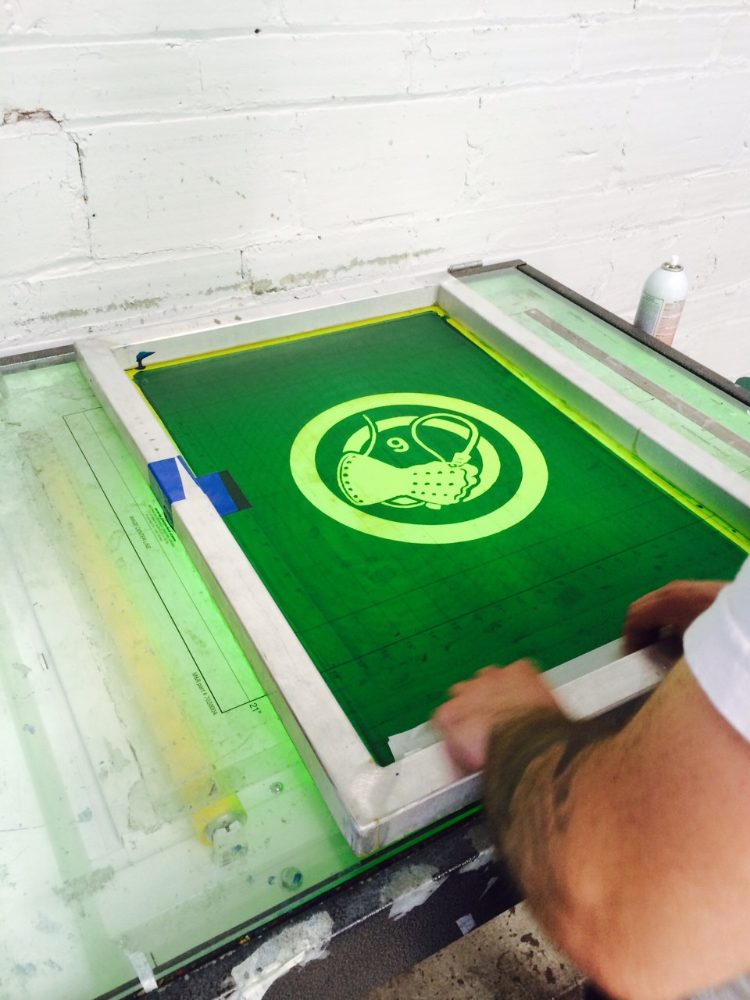

Prepress.
Alright, once you have exposed, rinsed out and dried your screen it's time to prep it. Take it to a well lit area. Tape up the gap inside the frame between the frame and emulsion (pictured below). Following that check for pinholes and debris in the stencil. Remove any debris or erroneous emulsion crud from the stencil by hand, rerinse, or with a spray out gun. Block out all your pinholes with thin layer of emulsion and be sure to let it dry. All good? Let's setup!!
